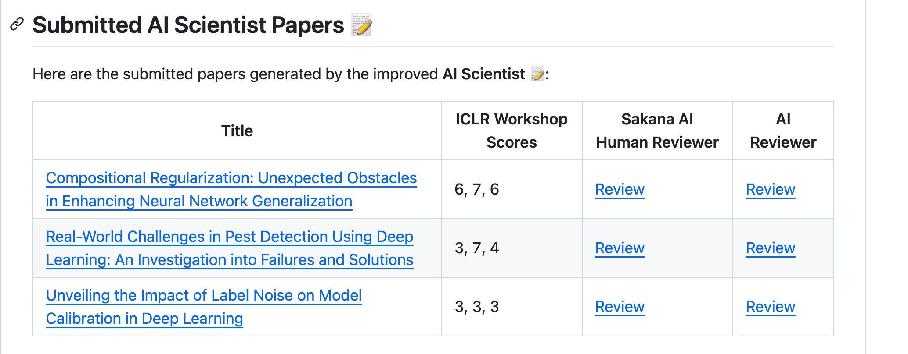
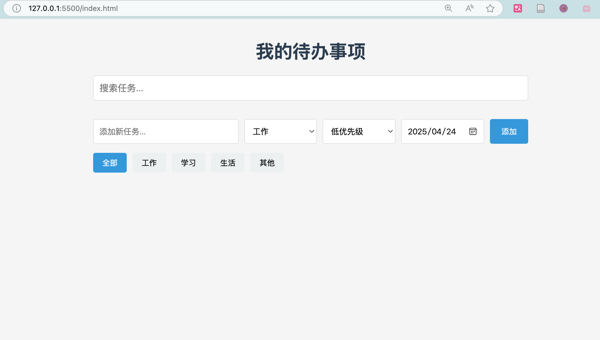

AI Agent实例展示
从科研到编程，智能代理正在改变我们的工作方式
AI Agent是具有自主思考和行动能力的智能体，能够理解复杂任务并采取行动完成目标。以下展示了两个实际应用案例。
AI Agent应用案例
探索AI Agent如何在科研和编程领域展现其强大能力
科研Agent
2025年，东京Sakana AI的AI Scientist-v2生成了完全由AI独立完成的论文《Compositional Regularization: Unexpected Obstacles in Enhancing Neural Network Generalization》，并提交至ICLR 2025年工作坊。
该论文经同行评审获得高分（如6、7、6分），超过了接受门槛。这个系统从提出假设到撰写全文全部自动化，无需人工修改。

这是首个通过ICLR严格同行评审的全AI生成论文，体现了AI在科研和学术写作领域的突破，同时也引发了关于学术伦理及评审机制的讨论。
Code Agent
Code Agent产品用cursor,windsurf,agument,trae,coplit...它们能够理解自然语言指令，并将其转化为功能完整的代码实现。以下是一个简单的Todo应用生成案例。
用户提示：
做一个精美的todo页面吧，要求我可以动态互动。
基于这个简单的提示，Code Agent能够生成一个完整的、可交互的Todo应用，包括添加、删除、标记完成等功能，并具有美观的界面设计。

这种能力使开发人员能够更快地将想法转化为实际应用，大大提高了开发效率，同时也使非技术人员能够创建简单的应用程序。